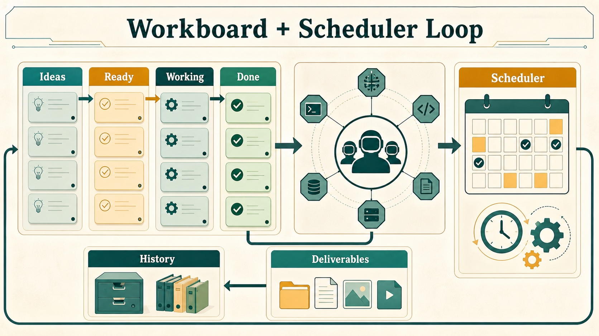

HivemindOS manual
Work And Automations
The Work board is where you put requests that should be tracked beyond one chat. Automations handles work that should happen later or repeat in the background.
Use Work when you want to assign an owner, attach files, follow progress, answer a blocker, review evidence, or keep the result as a durable deliverable. Use Chat for a quick conversation that does not need that structure.
Runtime-owned background work can use a different record. For example, an AEON-backed Zero Human Company records its accepted handoff in Company Runs and keeps detailed execution in AEON instead of inventing a completed Work Board card.

Use The Work Board
To run a task:
- Open Work and add the request to the appropriate board.
- Add any files, project folder, target machine, due context, or success criteria the agent will need.
- Move it to Waiting for Queen for routing, or assign it directly to an eligible agent.
- Follow progress in Working. Add a comment or attachment if the agent needs steering.
- Resolve decisions in Needs You rather than burying them in another chat.
- Review the result, evidence, and deliverables before accepting Done.
Your boards can be shared through Hive Superbrain so trusted machines see the same task state. A local fallback keeps the board usable during a temporary vault problem, but the shared vault remains the durable home when it is available.
Additional behavior:
- Boards and tasks use the shared vault when it is available, so trusted machines can see the same work.
- A local fallback keeps the board usable when the shared vault is unavailable.
- Project links and proof records stay attached to tasks without exposing private brain context.
- This Mac uses the native folder picker; remote machines use the Hivemind Link directory browser.
The standard columns are:
| Column | Purpose |
|---|---|
| Ideas | Capture rough thoughts that should not run yet |
| Waiting for Queen | Ready for assignment |
| Working | Claimed by an agent |
| Needs You | Blocked on access, approval, or a decision |
| Done | Completed with notes, evidence, result, or deliverables |
| Archived | Hidden from the main board but retained |
What the Work board can do:
- Create and switch named boards.
- Create, update, move, archive, and delete tasks.
- Filter by tenant, assignee, search text, and archived state.
- Bulk move or bulk assign selected cards.
- Dispatch tasks to agents.
- Detect stale or no-progress work.
- Preserve agent sessions on cards.
- Store attachments, linked directories, target machines, comments, events, run records, child links, and deliverables.
- Optionally attach a Hivemind project to a task.
- Preserve sanitized GitLawb proof records on cards.
- Attach closed/open/optimizer loop contracts with success criteria, budgets, pre/post eval gates, and receipts.
- Preserve planner/evaluator contract snapshots with agreed done criteria, evaluator pushback, expected artifacts, and optional evaluator rubrics.
- Fail loop-gated tasks closed to Needs You when required eval gates do not have passing receipts.
- Record optimizer loop experiments with parent lineage, hypotheses, scores, gate receipts, selected agents, and outcomes.
- Rank loop frontier candidates with Evo-style strategies such as
argmax,top_k, seededepsilon_greedy,softmax, andpareto_per_task. - Preserve “what not to try” anti-patterns on the loop so future agents can avoid repeated failed approaches.
- Store benchmark discovery metadata including target, command, metric direction, score floor, resource profile, instrumentation mode, and discovered gates.
- Expose a loop observation summary with best score, running-best lineage, frontier items, gate counts, experiment counts, and anti-pattern count.
- Show compact Code Proof badges for project-linked tasks.
- Extract local paths and URLs from completed output into deliverables.
- Roll completed child deliverables into parent handoff tasks while filtering planning/source artifacts.
- Open or reveal deliverables from the task.
- Import selected tasks from notes.
- Use machine-aware directory picking for linked folders: native picker for This Mac in desktop builds, collector directory browsing for remote machines, and API fallback in the browser.
- Capture quick-add text, files, images, directories, target machine, and voice transcripts directly in each lane.
- Steer active tasks with comments, attachments, target-lane selection, and interruption/reclaim actions.
Agent And MCP Orchestration
Agents can use the same Work Board path through the HivemindOS MCP server. The work_board tool covers the normal task lifecycle: list, create task, claim next, heartbeat, comment, complete, fail, block, and promote. This gives raw coding agents a shared queue without bypassing the board, receipts, comments, loops, attachments, target machines, or human review lanes.
The request_human_approval MCP tool creates a Needs You card for a decision. It records the request, context, options, and related task, but it does not approve the action or override any HivemindOS safety policy. Humans still decide in the dashboard or through the normal Work Board review flow.
Event-driven work uses the work_event MCP tool. Operators or agents can define a local event name, attach triggers, and later publish an event payload. Matching triggers create ordinary Work Board tasks, with optional FAQ text and a note telling the worker which follow-up event to publish when the work completes. This supports publish-event style coordination while keeping execution inspectable in the Work Board.
Agent Challenges use the agent_challenge MCP tool for bounded multi-agent objectives. A challenge keeps one public-within-the-hive board for candidates, findings, run requests, results, rulings, integrity alerts, and playbook notes. It records credited lineage across originators, runners, and verifiers; enforces optional per-agent daily run caps; and treats result deltas inside the configured significance threshold as frontier ties. Use a challenge when agents should collaborate on a measurable sprint before individual tasks or final deliverables are promoted through the normal Work Board.
Queen Bee Swarm Goals
/swarm-goal <build request> is the chat shortcut for turning a rough software idea into Queen Bee-orchestrated work.
The command expands a short request into a more complete build brief, including:
- the thing to build and likely framework
- expected features
- interaction, animation, and behavior details
- mood, visual direction, environment context, and effects
- explicit instructions for the coordinator to create a goal, split work into independent pieces, spawn parallel agents, and give each worker its own dedicated
/goal
After rewriting the prompt, Queen Bee records the request as a Work Board task, ranks online chat-capable fleet agents by worker class and routing context, writes the normal receipt trail, and can schedule autonomous pickup for act-mode tasks. Every dashboard swarm goal requests the server-owned app-build harness loop: planner, builder, and independent evaluator roles; lint, type, browser, artifact, evidence, and judge gates; and the engineering-discipline plus harness-engineering skills. The task cannot complete from a worker summary alone. A failed or missing required gate follows the normal fail-closed path to retry or Needs You.
PRD decomposition uses the same evidence boundary for each executable child. Code, operations, and QA children receive Engineering Discipline; research children receive source/evidence plus independent review; writing children receive artifact, evidence, and independent content review. Acceptance-criteria bullets remain completion criteria instead of becoming duplicate tasks, and QA dependency links still hold verification work until its matching build work finishes. The non-executing PRD epic remains a planning card without a loop.
Use ordinary Queen Bee or Work Board planning flows when you want to inspect routing without starting the build. Explicit API-supplied loops remain authoritative, including an explicit null opt-out; a loopTemplateId asks the server to construct a current template rather than trusting a client copy of verifier commands or rubrics.
Queen Bee also writes visual plan artifacts for accepted tasks and PRD decompositions. These artifacts link back to the Work Board task or PRD epic, include a route/dependency diagram, and show risk notes so a human reviewer can understand the plan without opening the full task body first. They are visible from the Memory review workbench.
The queen_bee MCP tool exposes the same coordinator path for non-dashboard agents: read coordinator state, queue a task, decompose a PRD, or operate Queen Bee flow templates and runs. Fleet routing, duplicate protection, receipts, and visual plans remain on the normal local-first record.
Loop Contracts And Eval Gates
Loop contracts are a generic HivemindOS primitive. Work Board tasks can carry one, but the same contract can be started from chat, Scheduler, Queen Bee flows, company dispatch, or Evo-backed optimization. The shared LoopSpec records the mode (closed, open, or optimizer), goal, negotiated done contract, evaluator rubric, success criteria, retry/runtime budget, handoff rules, required evidence, and named eval gates. Work Board stores it on the task as loop for backward compatibility.
Eval gates follow the Evo-style split between pre gates and post gates. A pre gate is intended for checks that can fail early before spend or external work. A post gate is intended for checks that need the worker result, benchmark output, artifact, or human review. Required gates must pass before the Work Board completes the task; missing evidence moves the card to Needs You instead of silently marking the work done.
Optimizer loops add five Evo-derived surfaces on top of the same task record:
- Experiment lineage:
loop.experimentsrecords each hypothesis, parent experiment, score, per-task scores, status, result, agent, and gate receipts. - Frontier strategy:
loop.frontierStrategycontrols how the next attempt is selected. The stored observation ranks current leaves so agents can exploit the best branch or preserve specialists. - What-not-to-try memory:
loop.antiPatternscaptures discarded approaches with reasons and evidence, close to the task rather than buried in chat. - Benchmark discovery:
loop.benchmarkrecords the target, command, metric direction, score floor, resource profile, instrumentation choice, and discovery notes. - Observability:
loop.observationsummarizes best score, running-best experiment ids, frontier candidates, pending gates, experiment totals, and anti-pattern count for dashboard cards and agents.
Loop Engineering lists the pattern registry, reusable templates, and verifier definitions, builds loop contracts from a natural goal, and can create a normal task with the generated loop attached. It can also audit the current board’s loop-readiness level and export LOOP.md, STATE.md, contract.md, loop-budget.md, loop-run-log.md, and patterns/registry.yaml snapshots for humans or raw agents. The hive-loop CLI exposes the same audit and export path outside the dashboard. It does not store a second loop record. From the Work Board, operators and agents can:
- attach or update benchmark discovery, gates, success criteria, and frontier strategy
- record an experiment and optional anti-patterns, then refresh the observation summary
Built-in patterns include Engineering Discipline, code-fix, app-build harness, research, content, daily brief, operating-unit learning, and Evo benchmark loops. Built-in verifiers include lint, typecheck, focused tests, Playwright smoke tests, artifact existence, independent judge review, human approval, evidence receipts, Evo score improvement, and governance policy checks. For the readiness ladder and operator commands, see Loop Engineering. For the user-facing verdicts and trust rules, see Agent Evaluations.
Choose Engineering discipline from a Work Board quick-add template when an ordinary consequential code task needs the full evidence path. Swarm goals and executable PRD children attach their evidence loops automatically. The created task carries a real closed loop: optional design approval for material ambiguity, required baseline evidence, red/green evidence or a concrete non-applicability receipt, focused tests, lint, types, independent review, and a final completion receipt. The attached engineering-discipline skill keeps the process proportionate and does not grant permission for destructive Git operations, external actions, or agent fan-out.
Built-In Skill Autoresearch
HivemindOS watches reviewed outcomes from regular chat, Work Board tasks, Company tasks, scheduled skill actions, and the shared skill-analytics intake. Three failed or blocked executions of the same installed skill across three distinct chat turns, tasks, or runs create one pending Brain Review proposal. A later cycle needs three fresh failures after the previous suggestion. Repeated successes do not create optimizer work; Frontier Lab’s review-gated Delight Miner can surface them separately as proposals for a reusable skill, schedule, or standing company capability.
Regular chat uses conservative per-turn attribution across typed chat, low-latency voice, Hive Fusion, phone-hosted agents, and HTTP/OpenAI-compatible runtimes. A skill counts only when the user explicitly names it, the agent profile selects it as a preferred skill, or a runtime tool receipt shows the skill’s SKILL.md was loaded. A skill that merely appeared in capability-search results does not count as used. The completed response is evaluated, and a thumbs-down records a corrected failure for that same turn; clearing feedback restores the automatic outcome. Repeated identical prompts still remain distinct turns.
Approving the proposal records the decision. Applying it creates a high-priority Work Board optimizer task with the original skill as its baseline and four independent variants: better inputs, sharper output, more robust behavior, and a materially different rethink. Every candidate uses the same cases, rubric floors, evidence gates, and independent review. The task returns a winning diff or a no-improvement receipt; it never replaces the installed skill automatically.
The native Work Board optimizer is always available. If Evo is installed and the target is a git repository with a benchmark command, HivemindOS can select Evo for isolated experiment branches. A missing repo-local Evo workspace can be initialized inside the already approved task. Users do not need to enable Evo globally or configure AEON for skill autoresearch.
Zero-Human Company Learning Loops
For the full company cockpit and launch flow, see Zero Human Companies.
With the HivemindOS crew engine, a company uses the same generic loop contract as its private learning layer. When the company launches its apex goal, HivemindOS plans the goal into Work Board tasks and attaches an operating-unit learning loop to each dispatched task. Each company task carries a planner/evaluator contract snapshot; customer-facing product, design, content, and site work also carries a four-axis evaluator rubric for design, originality, craft, and functionality.
Every company task requires outcome evidence. Product, design, content, and customer-facing work also requires a separate eligible agent to review the result against its rubric. Missing evidence or a missing reviewer sends the task to Needs You instead of counting it as a company success. This gives the company a model-independent “company veteran” layer made of evaluated outcomes, artifacts, workflows, receipts, avoided failure modes, and private eval structure.
The Zero Human Company cockpit summarizes that layer as capability capital:
- learning assets from completed work, durable outputs, committed experiments, and anti-patterns
- workflow assets from reusable task skills and committed loop branches
- private eval gates and pass rate
- Evo-style frontier candidates and experiment count
- distillation queue for completed work that should be reviewed before it becomes durable Shared Brain Memory
- model-independence score from runtime diversity, eval structure, and Evo-compatible frontier metadata
This keeps the native company learning loop owned by the workspace rather than any single model. Future workers can change, but the company’s charter, evals, receipts, artifacts, and reviewed memory remain portable.
Company tasks also report the outcomes of their attached skills to the app-wide autoresearch detector. Repeated failure can therefore propose an improvement while preserving the company id as provenance. The proposal still goes through Brain Review, and applying it creates an ordinary inspectable Work Board task; Company autonomy cannot silently rewrite a shared skill.
With the optional AEON background skill engine, HivemindOS does not create a Work Board task automatically. Company Runs records the accepted handoff as unobserved, while AEON owns the detailed run state and outputs. AEON output does not become a reviewed company learning asset automatically. Promote durable evidence through the normal review flow when it should become company knowledge. See Using AEON With Zero Human Companies.
Note Intake And Work History
The Work surface also acts as an audit and intake console:
- Note intake scans configured vault folders for unchecked markdown tasks and “Next action” sections, then imports selected items into Ideas.
- Board settings control whether note intake is enabled and which folders it can scan.
- Work History combines changelog and repository activity with project filters, text search, and paging.
- Work History sits beside Work Board, Automations, and Simulation so local changes and agent work stay visible without leaving the control room.
Project Provenance
The Work board can link tasks to Hivemind projects without forcing every task to be part of a repo.
How it works:
- A task can link to a registered project without requiring every task to belong to a repository.
- A linked GitLawb project can add sanitized proof context to the task.
- Queen Bee can prefer the machine with the matching, current project checkout when it routes code work. Collectors report these matches through the
version.projectCheckoutsinventory.
This lets one machine work across many projects and many GitLawb repos. The shared Brain keeps private task and memory context. GitLawb carries public-key code provenance.
Automations
Open Automations, choose New automation, describe what should happen, select the responsible agent, and choose when it should run. Review the saved schedule before enabling it.
How it works:
- Schedules use the shared vault when it is available, keeping repeatable work visible across trusted machines.
- Runtime-native controls appear only where the selected runtime supports them.
- This Mac uses the native folder picker; remote machines use the Hivemind Link directory browser.
- Skill-backed schedules keep their selected runtime or skill context attached to the run history.
What Scheduler can do:
- Create and import schedules.
- Run, pause, resume, and inspect runtime schedules where supported.
- Track past scheduled runs in the shared vault.
- Browse folders and attach runtime or skill context.
- Route scheduled prompts through supported agents.
- Expand or collapse long schedule descriptions without silently truncating them.
- Show run-state phases such as assigned, thinking, executing, wrapping, and done.
- Create new jobs from the scheduler rail and use cadence templates for cron, interval, daily, weekday, and market/session-like schedules.
- Run the
hive-quant-researchskill from a reviewed request file on an approved cadence; the action writes local research artifacts and cannot enable live trading.
AEON Deliverables And Scheduled Work
AEON work has its own runtime-owned handoff loop:
- Recent AEON artifacts appear as deliverable cards with readable titles, excerpts, facts, open actions, and download-to-machine flows.
- Workspace cards can show new deliverable counts.
- AEON scheduler controls keep scheduled background work and workspace deliverables connected.
- A Zero Human Company can optionally use one saved AEON workspace and skill as its autonomy engine. That company records accepted dispatches in Company Runs; it does not create a fake Work Board completion. See Using AEON With Zero Human Companies.